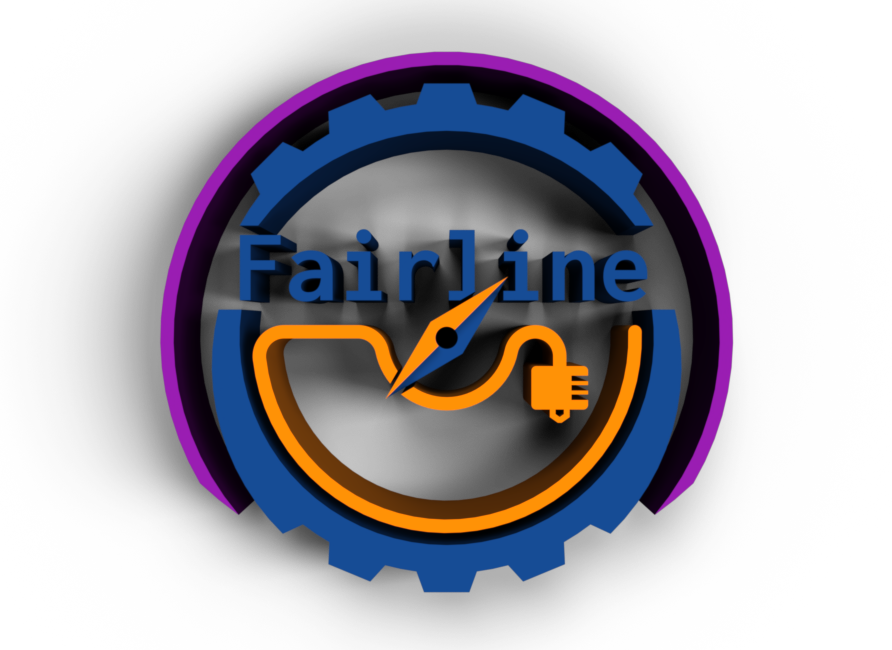

3D Printing Repositories
Articles


Merch
Support My Work
Services
Portfolio
Most of my printable models are available on Printables, where you can download them for free and support my work.
Rolohaun Delta Flyer

Most in depth yet
I worked with Rolohaun on this project. My main focus was general polish of all the files, clean up the CAD and adapt it for some of the spesific needs when creating a printer kit with LDO. I made all the Renders and made sure the CAD was nice and easy for people to view and use as reference, including all the correct screws, components and reference models and the documentation.
WRAP - Wondrous, Replaceable, and Adaptable Pieces

A bit of fun
This was somewhat of a fun weekend project. I was going to an event and wanted some fun headbands I could print and wear, but everything I could find online would need adapting to fit my need, so I made my own interchangeable system to easily adapt and print new pieces.
Rook 2020 MK2

Getting started
My first "big" project, a 2020 extrusion adaptation of the popular "Rook 3D printer by Rolohaun". This was all done by myself, from the original (no longer published) Legacy version, "MK1" and finally the "MK2". This project has a special place in my heart, and I have at least 4 of these printers in my studio, including the larger "Scalable" version.
Mini Rotary Display Table

All in a day
A one-day project. A long time ago I printed a rotary table and assembled it using some simple components, but I never used it because it kept getting broken because of some flimsy printed parts. I had an idea one day of making a more sleek design that was more robust that I can use when showcasing projects and items in the future.
Projects
GitHub
 Moonitor
Moonitor
Link to my main Github Repository.
A lightweight, zero-latency fleet dashboard for Klipper and Moonraker.
Delta FlyerOfficial website for the Delta Flyer 3D Printer project.
3DPCR Master CAD LibraryA configurable collection of common parts for designing your 3d printer related projects.
TermWormA one-click, embedded Linux terminal integrated directly into your Mainsail sidebar for Klipper hosts.
MoonScoot klipper IP locatorA web-tool that searches your local network for Moonraker (Klipper) printers.
ScriptScreenA minimalist, high-contrast digital communication board designed for zero-latency, distraction-free text display.
3D Print cost calculatorSimple tool to estimate prices for printing items.
Kobra S1 MacrosMy collection of macros for the Anycubic Kobra S1
Klipper Macro GeneratorWeb-generator that produces macros for your klipper printer.

Fairline Klipper Config GeneratorLets you easily create a base config file for your klipper printer.
Rook ConfigsCollection of macros for the Rook 3D printer.
Website-makerA fun little guide to make a simple website in just a few minutes.
Klipper USB TransferA tool to put on your klipper host to automatically transfer gcode files from any USB drive to the printers gcode folder.
Klipper Shaper one-click toolOne-click input shaper tool that automatically calibrates graphs and moves them to the printers config tab for easy access.
F1 107% calculatorSimple calculator for the F1 Fans!
Mystery Shop RouletteFor when you are bored and have nothing else to do, WARNING, this might be the dumbest thing I have made.
Affiliate
Get in Touch
Or email me directly: mail@kanrog.com
Social Media